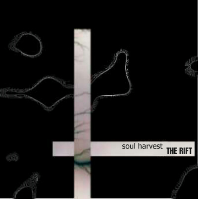
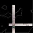

Album: The Rift
Lyrics by: Sabastian Callander
Music by: Sean McCullough
Performed by: Soul Harvest
Recorded: August 19th, 1999 at Distortion Studios in Ottawa, Ontario

|
Clip [N/A]
|

|
Download [N/A]
|
|

|
CD INFO
|
|
Lyrics and Story
"Your dreams are made of
The thread of a sandman's touch
Oh you'll be dreaming here forever"
What DO the lyrics mean? Only Sabastien Callander knows for sure. Often ridiculed for his first, and last, lyric-writing attempt, the words have stuck with the song to this day. Lines like "There's nowhere you can hide that you could hide under the weather" and "Open up your evil eyes that feed your hollow mind" are just a sampling of the dark imagery used in his writing.
The song, conceived of by Sean McCullough as an attempt to bring a "metal" feel to some of the regular Soul Harvest fare seemed to meld with the words once the melody line for them was rewritten by Jason St-Cyr to match Jason's Vedder-esque style of singing.
Re-recorded for "The Rift", singer Dave Van Soest added his own "death-metal-lounge-singer" twist to the song's vocal line.
|